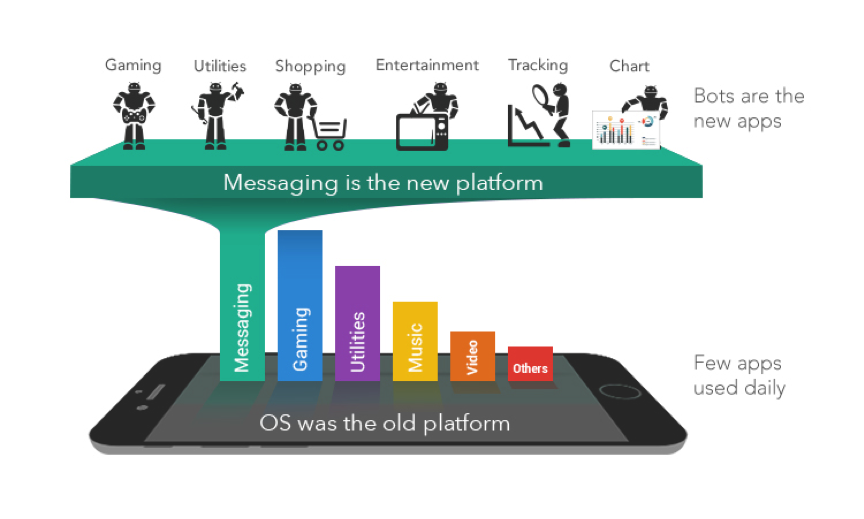
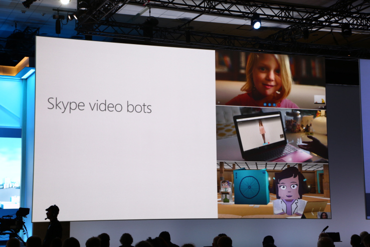
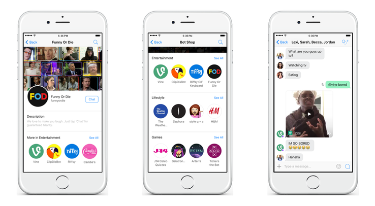
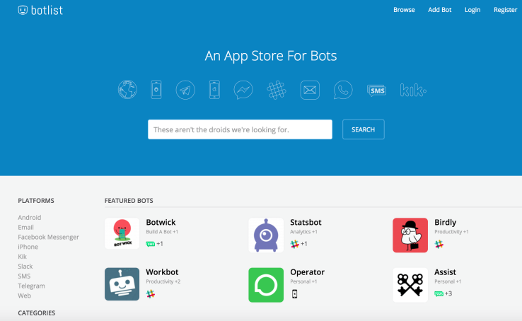
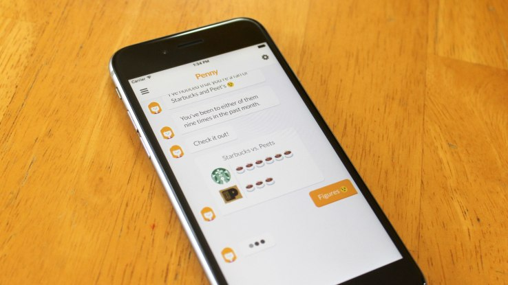
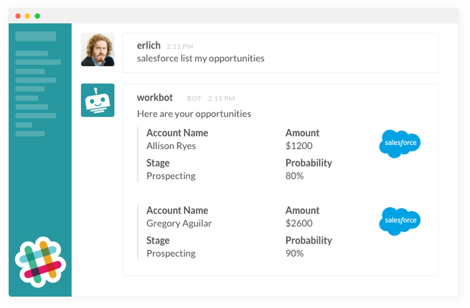

再谈bot
本文是一个TechCrunch最近一年有关bot新闻报道的survey，从原文中提炼了些核心观点，来研究下国外bot的发展。
Forget Apps, Now The Bots Take Over
Sep 29, 2015 TechCrunch
正如浏览器取代了操作系统的地位作为新的平台，网站取代了应用程序的地位，bots将会取代移动app的地位，今后将会是bot store，各种各样的bot，而不再是app store。
类似于微信、Line、Facebook、Slack这样的message平台，将会成为一个新的入口。在message平台上有各种各样的bot，用户通过message与各种bot进行交互，来体会之前在手机各种app上的服务。

It’s a brave new bot-filled world, with new possibilities and new risks.
Check out the new AI-powered TechCrunch news bot on Telegram messenger
Mar 15, 2016 TechCrunch
Techcrunch在Telegram上用Chatfuel构建了一个news bot，用户可以通过订阅不同的topic，authors和sections，bot根据订阅内容每天会推送两次trending stories digest给用户，另外也可以进行一些问答、聊天。

Microsoft is bringing bots to Skype — and everywhere else
Mar 30, 2016 TechCrunch
微软CEO Nadella说,bots是下一代应用，只需要用自然语言与bot进行talk就可以完成之前大量手机app和网站做的工作。微软在bot的研究上投入很大，成果也颇多，小冰、Tay、Cortana，和开源的bot framework，并且将很多好玩的deep learning应用与bot做了整合，比如image caption bot，bing music bot，bing news bot。

Chat app Kik launches a bot store and anyone can make bots for it
Apr 5, 2016 TechCrunch
Kik是一个聊天app，构建了自己的bot store，chat被认为是下一代操作系统，而聊天app则是新型的浏览器，bots是新型的网站。bot和聊天的环境类似，增加了一些特殊的trigger，用来激发一些特殊的动作。

Botlist is an app store for bots
Apr 11, 2016 TechCrunch
Botlist是一家做bot聚合的平台，和豌豆荚是类似的概念，聚合了各种message平台上的各种bot应用。

TechCrunch launches a personalized news recommendations bot on Facebook Messenger
Apr 19, 2016 TechCrunch
TechCrunch在Fb平台上的bot具备一个简单的个性化推荐的功能，根据用户的喜欢来推荐可能感兴趣的文章。
ToyTalk renames to PullString, repositions as authoring tool for bots
Apr 26, 2016 TechCrunch
PullString做儿童市场，因为孩子的词汇量非常有限，而且都很容易理解，关键是孩子对那些nonsense的回答并不介意。
Bots, Messenger and the future of customer service
May 7, 2016 TechCrunch

传统的客服总是给人留下低效的印象，而随着AI研究水平地不断提高，用bot来替代或者辅助人工客服将是一种趋势和潮流。
Penny raises $1.2M in seed funding for its personal finance bot
May 23, 2016 TechCrunch
Penny是一个personal finance bot，通过chat来帮助用户管理finance。不过chat只能通过pre-populated messages，而不是自然语言。尽管进入了一个bot时代，但chat的方式并不是解决所有问题的最好方法，在shopping领域，传统的电商网站比bot更好用。

Microsoft tries its hand at a news bot with Rowe
May 24, 2016 TechCrunch
微软太钟爱bot了，在新闻领域开发了一款bot，整合了自家一个新闻App News Pro的功能，通过topic来获取相关news，获取今日头条，获取系统推荐的news。

Workato unveils Personal Workbot to silence some of the Slack bot noise
Jun 23, 2016 TechCrunch
Workato提供一个bot服务Personal Workbot，为slack用户过滤掉channel中无关的信息，提高效率。

Zoom.ai believes an automated assistant is the fix for a weighty workload
Jul 14, 2016 TechCrunch
Zoom.ai与之前的chat bot startups不同，目的客户是企业。创始人说，bot更像是一种UI，bot背后的技术才是真正需要解决的问题，NLP技术才是最关键的东西。
Legion Analytics is building bots to automate your sales pitch
Jul 15, 2016 TechCrunch
Legion Analytics这家公司借助人工智能技术，帮助销售团队更加高效地工作。并不是说用bot来替代人工销售团队，而是帮助他们处理更加耗时的邮件咨询和demo演示。
Bot influencers are the programmatic future of conversational advertising
Jul 21, 2016 TechCrunch
conversational广告有望改善目前digital ads的缺陷，可以做的更加relevant、contextual和unobtrusive。
Why do chatbots suck?
May 29, 2016 TechCrunch
文中的观点基本同意，chatbot领域太广容易失败，不如做好特定领域内的服务。bot有智能的，比如微软的Tay，也有不智能的，比如Facebook平台上的CNN chatbot，设定一些button，绑定一些特定的事件。市面上没有一个真正好用的bot，很多领域为了bot而bot，用传统的app通过几个步骤就可以完成的事情，在bot中需要通过打很多的字才能完成，其实用户并不在意你的东西是不是智能，也不关心你产品背后的技术多牛，只在乎你的产品是不是简单好用效率高。一切以贴牌炒概念的bot产品都是耍流氓。现阶段，很多相关技术并不成熟，作者建议说在企业客服这个领域多做一些工作，比如把企业的产品FAQ bot做好，节约一些人力成本。（国内很多家做FAQ bot的公司）
Review
本文是考察国外bot文章系列的第一篇，全都来自TechCrunch。看了一天的新闻文章，从国外科技记者的角度看了下bot这个领域的发展和未来。
1、整体来说，比较乐观，从大公司、投资人、记者、用户多个角色来看，大家都比较看好bot的发展，相信bot是下一个app的形式，就像website取代了传统桌面程序一样，bot也会取代现在的手机app。
2、chat的形式就是大家来聊天，自然而然大的message平台，比如Facebook的Messenger，微信，Line，Slack，Telegram等等，就是成为bot的平台，就像现在的操作系统平台一样。
3、国外的bot公司很多很多，后缀带.ai多的数不清，从这些新闻中分享的bot应用，看得出大家现在还停留在一个比较初始的bot状态，有一点像arxiv上占坑的感觉，没有太多所谓的智能，只是有一个chatbot交互的UI，基本上实现具体的功能都靠事先定制好的button来trigger，更像是交互方式的革新，而非真的人工智能。
4、很多bot都在炒概念，往hot topic上靠，为了bot而bot，手机app用基本简单的点击操作就可以完成的任务，用bot却非要花费大量的时间来输入order或者人类语言，有点多此一举了。说白了，语义理解技术还不够成熟，大家将本该高度智能化的bot做成了step by step的引导，让用户使用了更加复杂的操作。当然，如果你的bot可以准确理解一句或几句简单的人话，然后完成复杂的业务处理，并反馈给用户结果，这样的bot才会让用户真的信服。
5、大伙儿基本上都把bot当成下一代app了，于是出现了很多家做bot聚合和分发的平台，类似app store，豌豆荚这种角色。一个市场雏形出来了之后，大家各自定位，各吃一块蛋糕。
6、客服bot是目前国内市场bot最活跃的一类，提供的功能基本上是企业产品或者业务的faq，差异化在于理解用户的query上，可能技术上略有差异。另外还有一种助手式的bot，提供了一些日常服务，比如查天气，订机票，订饭，打车等功能，基本上纯粹理解自然语言的很少，都是预先设定好套路，根据前一个context来trigger出后一个question，step by step地带着用户完成一个指定任务，因为涉及到多轮对话，context的理解和处理就显得非常重要，理解不好就显得bot非常弱智。这里，我觉得根据context做response的生成是个可以应用的点，虽然说可用的dataset规模很小，但可以考虑将已有的dataset做template化，通过template后的dataset来训练response generator。
今天是系列文章的第一篇，后续会读更多的news或者discussion，以及研究国外bot的产品形式和所用技术，做更多的分享，欢迎讨论。